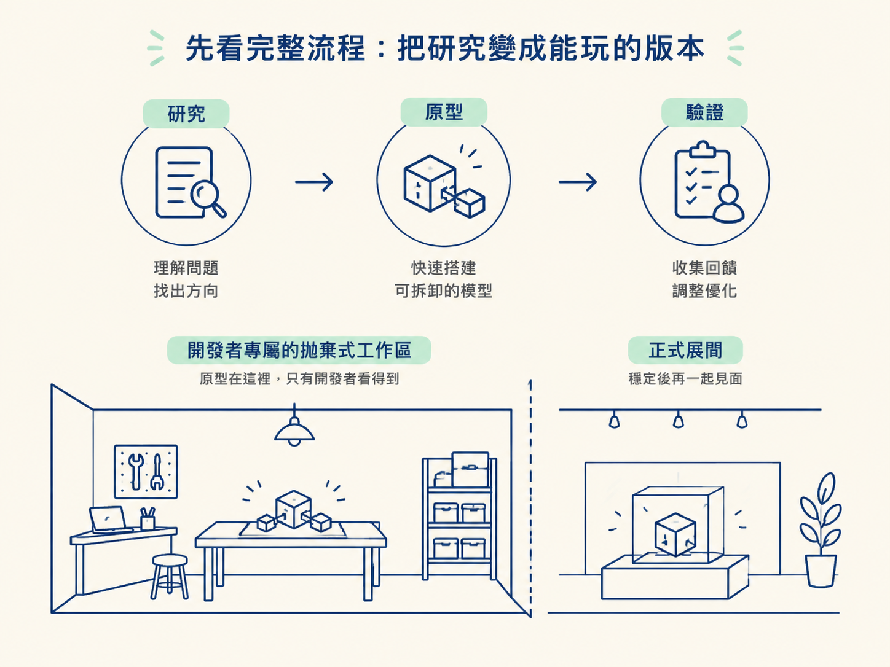
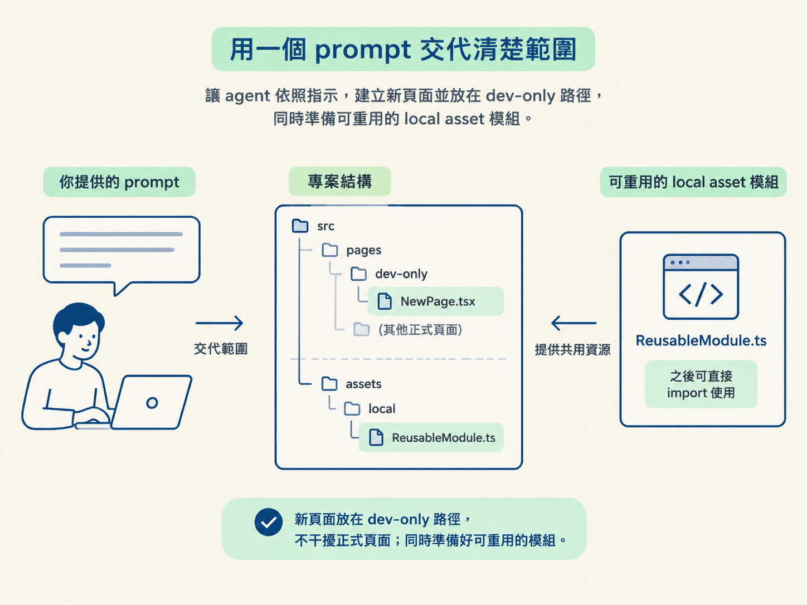
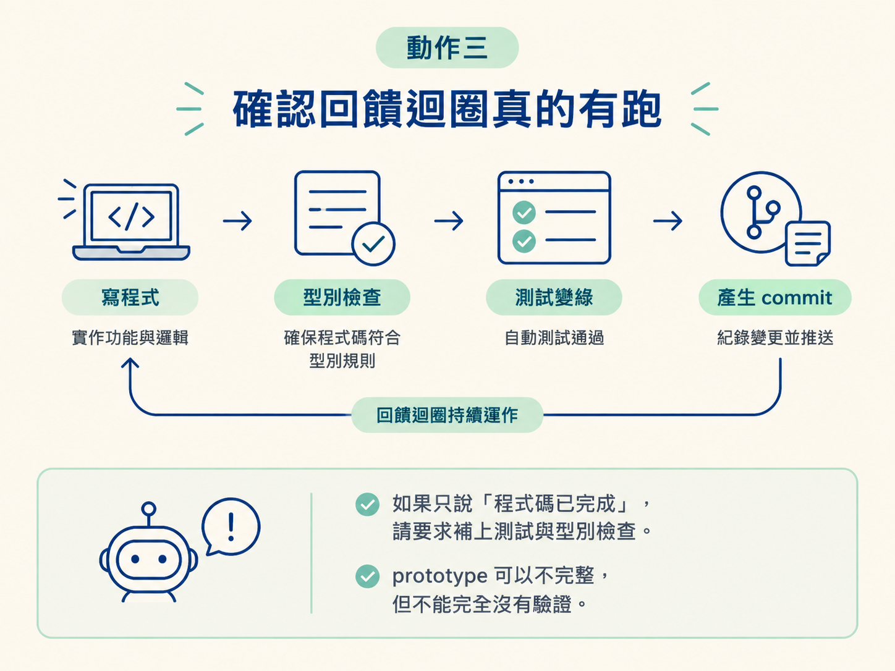

這一節要把已經完成的研究，變成一個真的能跑、可以親手驗證的版本。完成後，你會得到三樣東西：一個只有開發者看得到的頁面、一個正式實作時可以直接重用的零件，還有一段照著做就能驗證結果的說明。
動手前，先確認以下條件都已經準備好。
你有一份完成的研究文件，內容包含需求、候選服務的比較，以及推薦的做法。這個例子使用 plans/live-presence-indicator 這類路徑，讓 agent 可以讀到它。
你的環境裡可以使用 do-work skill。它是一套做人機協作短衝的 skill，內建回饋迴圈與測試先行流程，適合「自己貼近操作，但不把所有決定都交給 agent」的工作方式。
如果研究選定的服務需要帳號，請先準備好。本例需要一個 Ably 免費帳號。
本例的題目是「課程頁的線上人數指示器」。研究已經完成，也選定 Ably 作為即時服務。接下來不是重新比較服務，而是把已知的做法實際跑起來，確認它在真實環境中能不能成立。
整個操作可以拆成三個動作：
最後，把成果關在只有開發者看得到的 throwaway route 裡。這就像先在工作室搭一個可拆卸的模型，不要一開始就把半成品鎖進正式展間。

前面介紹的 prototype skill 有 logic 與 UI 兩條分支，適合還在挑方向、比較不同版本的時候使用。這次的設計在研究階段就已經定下來了，沒有必要再同時做幾個方向來比較。
現在要做的是親手把一個已知做法跑一次，確認它在真實環境裡可行。這種需要貼近操作、又要隨時保留自己判斷的工作，正好適合 do-work。
可以這樣記：
不要一開始就叫 agent 寫程式。先請它讀研究文件，再用自己的話複述這次要做什麼、選了哪個服務，以及要驗證哪些假設。
這一步像是開工前先請隊友講一次施工圖。只要聽它怎麼說，你就能判斷它是真的理解內容，還是只撿到了幾個關鍵字。
預期看到的內容，至少應該包含服務名稱、連線方式，還有像「多人同時上線時，畫面會即時反映人數變化」這類具體目標。
確認 agent 讀懂研究後，再指名使用 do-work skill，並把成果的邊界講清楚。一個適合這次 prototype 的 prompt，至少要交代四件事：
下面這段可以直接照著使用：
用 do-work skill。
讀 plans/live-presence-indicator 這份研究，
照它把線上人數指示器做一個 prototype。
三個要求：
1. 做在一個只有開發者看得到的 throwaway route 上，
不要碰正式路由。
2. 把連線與顯示的邏輯寫成可重用的 local asset，
之後正式實作要能直接 import 進來用。
3. 附一段簡短的「怎麼測」，讓我照著就能驗證。
這是一個 prototype，目的是在正式實作前
先把不確定的地方試出來，不用做到完整。這段 prompt 裡，「這是一個 prototype，目的是先把不確定的地方試出來」尤其重要。少了這句，agent 可能會把工作做得太滿，開始補齊完整錯誤處理，甚至試圖處理所有邊角情況。
預期看到的結果是：agent 開始動工，並把新頁面掛在 dev-only 路徑下，而不是把功能塞進既有的正式頁面。

do-work 的重點之一，是它不只寫檔案，還會跑型別檢查與測試。等 agent 回報完成後，請確認它真的跑過這些步驟。
預期看到：
如果它只說「程式碼已完成」，卻沒有提到測試或型別檢查，請明確要求它補上，再繼續往下走。prototype 可以不完整，但不能完全沒有驗證。

本例在研究階段已經選定做法，因此只需要一個能驗證的版本。但如果你自己的方向還沒決定，就不能用完全相同的要求。
若方向未定，請明確要求 agent 做出多個差異夠大的版本，並用 URL 參數切換。這樣你才能快速左右比較，而不是做出幾個看起來幾乎一樣的版本。
若方向已定，則只要一個能驗證假設的版本即可，不需要為了「看起來比較完整」而硬做多個選項。
請先確認 prototype 不會出現在正式路由或正式建置裡。否則它很容易變成一個沒人敢刪、也沒人負責維護的半成品。
如果它只是用來探索未知，就應該清楚限制在只有開發者看得到的地方。這樣即使之後決定不採用，也能安全移除。
如果需要第三方服務，API key 不要直接寫進程式碼，也不要提交到版本控制。請放進 .env，並確認 gitignore 有忽略這個檔案。
金鑰只開啟這次 prototype 實際需要的最小權限，不要為了省事直接開到最大。這是 prototype，也不能把安全邊界一起當成實驗品。
如果服務需要註冊帳號，而你在取得 key 或設定權限時卡住，請直接要求 agent 提供一份逐步指南，說明怎麼取得 key、需要開哪些權限。不要在不清楚的情況下自己反覆亂試。
操作完成後，請逐項確認專案裡有以下三樣成果：
到這裡，prototype 的任務就完成了：你已經把研究中的做法實際跑過一次，也留下了可以重用的零件。至於程式碼品質是否足以直接搬進正式版，會在下一節處理。
跑一個 do-work prototype 時，請完成四件事：指名使用 do-work skill、指向既有研究、把成果限制在只有開發者看得到的 throwaway route，並要求一個之後能直接重用的 local asset。prompt 也要說清楚「這是用來沖未知的 prototype」，避免 agent 做過頭。完成後，你應該拿到 dev-only 頁面、可重用零件，還有一段怎麼測的說明。